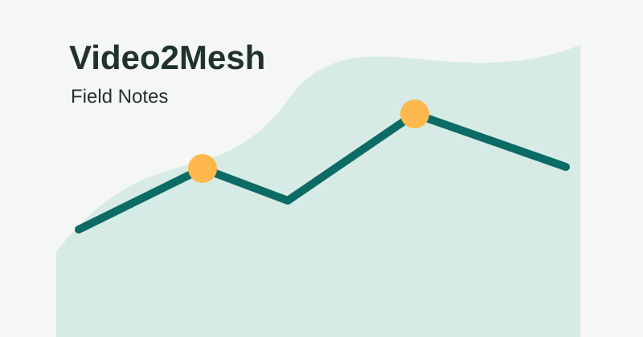

从扫描视频到可仿真的 3D 场景资产
把项目说明、流水线、3DGS 调研、scene graph、游戏交互场景和运行手册集中在一个可搜索、可上传、可交互的静态博客中。
Video2Mesh 文档知识库

把项目说明、流水线、3DGS 调研、scene graph、游戏交互场景和运行手册集中在一个可搜索、可上传、可交互的静态博客中。
连接这台电脑上的本机 API，同步 Markdown、查看多个项目记录，并把手机发来的 Codex 工作放进安全任务队列。
尚未登录。只有登录后才能访问 Mac 控制接口。